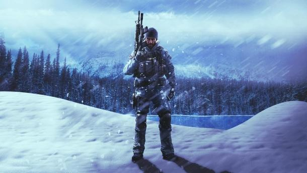

Оперативник Rainbow Six Siege - Buck
- Гаджет: дробовик Skeleton Key
- Броня: 2/3
- Скорость: 2/3
По мере того, как стратегии атаки становятся все более сложными, Buck приобретает все большую популярность в игре. Дело в том, что этот боец может одновременно пользоваться шутрмовой винтовкой, дробовиком и пистолетом. Благодаря наличию подствольного дробовика Skeleton Key с приличным запасом патронов Buck может простреливать полы, потолки и неукрепленные стены. Очень часто трюк с разрушением поверхностей над/под/за точкой дает атакующей команде определенное преимущество, ведь таким образом штурмовые бойцы могут застать противника врасплох. Вместе с тем дробовик можно куда эффективнее использовать в битвах на ближней дистанции, чем ту же винтовка или пистолет. Благо переключение между подствольником и основным оружием происходит практически мгновенно.
Свою популярность среди игроков Buck также получил благодаря своему первичному оружию: здесь геймер может выбрать скорострельную штурмовую винтовку C8-SFW или мощную, но довольно медленную CAMRS.